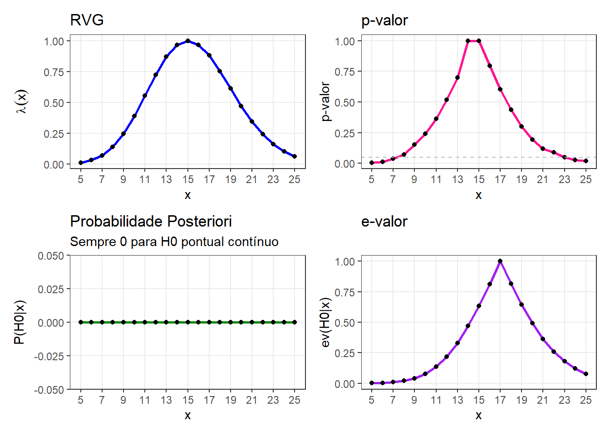
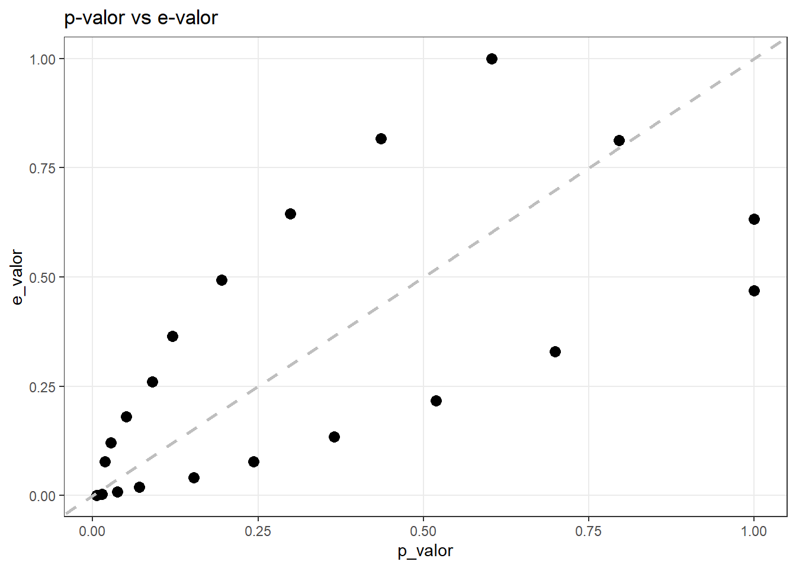

x <- seq(from = 5, to = 25, by = 1)Modelo Poisson-Gama
Introdução
Queremos analisar o comportamento de diferentes estatísticas de teste sobre a taxa média \(\lambda\) de uma população. Usaremos uma distribuição Poisson, onde buscaremos testar hipóteses sobre a taxa média \(\lambda\).
Definindo o modelo
Seja \(X_1, \dots, X_n\) v.a.c.i.i.d. tais que \(X_i|\lambda \sim \text{Poisson}(\lambda)\). Nesse exercício fixaremos o tamanho da amostra em \(n=5\).
Para esse caso, a estatística suficiente é a soma das observações: \(T(\mathbf{x}) = \sum_{i=1}^{5} X_i\).
Para o modelo Poisson, a soma segue a distribuição:
\[ T(\mathbf{x}) \sim \text{Poisson}(n\lambda) = \text{Poisson}(5\lambda) \]
A distribuição a priori conjugada para a média da Poisson é a Gama, vamos usar como parâmetros \(\lambda \sim \text{Gama}(\alpha=2, \beta=1)\).
A f.d.p. da priori é dada por
\[ f(\lambda) = \frac{1^2}{\Gamma(2)}\lambda^{2-1}e^{-1\lambda} = \lambda e^{-\lambda} \]
Consequêntemente, a distribuição a posteriori para um dado \(x\) (onde \(x = \sum X_i\)) é
\[ \lambda | \mathbf{x} \sim \text{Gama}(\alpha_{post} = 2 + x, \, \beta_{post} = 1 + n = 6) \]
Teste de Hipótese
\[ H_0: \lambda = 3 \quad \text{vs} \quad H_1: \lambda \neq 3 \]
Como \(H_0\) diz que \(\lambda=3\) e definimos \(n=5\), nosso valor esperado da soma \(T(\mathbf{x})\) é \(3 \times 5 = 15\).
Vamos estudar o comportamento das estatísticas de tese para uma sequência de valores \(x\) (soma), em torno dessa média esperada (variando de 5 a 25), \(x = \sum_{i=1}^5 \in \{5, 6, \cdots, 25 \}\).
De maneira computacional:
Para cada um desses valores possíveis de \(x\), vamos calcular (e depois comparar) quatro medidas de estatística de teste:
1. RVG (Razão de Verossimilhança Generalizada) - \(\lambda(x)\): que é baseada na razão entre o supremo da verossimilhança sob \(H_0\) e sob todo o espaço paramétrico.
\[ \lambda (x) = \frac{\displaystyle \sup_{\theta \in \Theta_0} f(x|\theta)}{\displaystyle \sup_{\theta \in \Theta} f(x|\theta)} \]
2. p-value: é a probabilidade, sob \(H_0\), de obter uma estatística de teste tão ou mais extrema que a observada.
\[ \sup_{\theta \in \Theta_0} P(X: \lambda(\mathbf{X} \leq \lambda(x)| \theta) \]
3. Probabilidade a Posteriori (\(P(\theta \in \Theta_0|\mathbf{x})\)): A probabilidade direta da hipótese nula ser verdadeira dado os dados.
4. e-value:
\[ Ev(\Theta_0 | x) = 1 - P(\theta \in T_x | x) \]
Com
\[ T_x = \{ \theta : f(\theta | \mathbf{x} \geq \sup_{\theta \in \Theta_0} f(\theta | x) \} \]
Ao final, depois de mostrar a parte computacional (como calcular cada valor no R), mostraremos a evolução dessas medidas graficamente, ou seja, como cada abordagem reage a variação da nossa estatística suficiente,
Definindo nossos parâmetros iniciais
n <- 5
lambda_0 <- 3
mu_H0 <- n * lambda_0
# Priori Gama(2, 1)
alpha_prior <- 2
beta_prior <- 1RGV
Para calcular a RGV usamos a Estimativa de Máxima Verossimilhança (EMV), que é dada por \(\hat{\lambda} = x/n\).
A razão de verossimilhança é calculada por:
\[ \lambda (x) = \frac{\displaystyle \sup_{\theta \in \Theta_0} f(x|\theta)}{\displaystyle \sup_{\theta \in \Theta} f(x|\theta)} \]
Onde:
Considerando \(H_0: \lambda = 3\) e \(n=5\), o processo é:
Denominador: Ocorre na EMV, como \(n=5 \Rightarrow \hat{\lambda} = x/5\).
Numerador: Como nossa hipótese nula tem apenas um ponto (\(\lambda = 3\)), o \(\Theta_0\) contem apenas o valor 3. O máximo (supremo) é a verossimilhança calculada em \(\lambda = 3\).
\[ \lambda(x) = \frac{V(3)}{V(x/5)} = \frac{e^{-5(3)} \cdot 3^x}{e^{-5(x/5)} \cdot (x/5)^x} \]
Nesse caso, a RVG só será igual a 1 se a média amostral for exatamente 3 (\(x=15\)). Para qualquer outro valor, \(\lambda(x) < 1\).
p-valor
Para esse teste, o p-valor representa a probabilidade de observarmos uma soma total de eventos tão ou mais extrema que a observada (\(x\)), assumindo que a hipótese nula é verdadeira.
Sob \(H_0\), a estatística suficiente \(T(\mathbf{X}) = \sum X_i\) segue uma distribuição Poisson com média \(\mu = n \lambda_0 = 5 \times 3 = 15\):
\[ T(\mathbf{X}) \sim \text{Poisson}(15) \]
Como nosso teste é bicaudal, consideramos ruins valores distantes de 15.
Computacionalmente:
teste <- poisson.test(x, T = 5, r = 3, alternative = "two.sided")
p_valor <- teste$p.valueUsamos a função poisson.test, que calcula o p-valor exato para testes em distribuições Poisson.
Probabilidade a posteriori
Como citamos, a distribuição a posteriori do parâmetro \(\lambda\) também é uma Gama, com os parâmetros atualizados:
\[ \lambda | x \sim \text{Gama}(\alpha_{post} = 2 + x, \, \beta_{post} = 6) \]
Como nosso \(H_0\) é exatamente igual a 3, a probabilidade de uma Gama ser exatamente 3 é 0 (porque temos uma v.a contínua).
\[ P(\lambda = 3 | x) = \int_{3}^{3} f(\lambda|x) d\lambda = 0 \]
No R:
calc_prob_pontual <- function() {
return(0)}e-value
Queremos calcular:
\[ \text{e-valor} = 1 - P(\theta \in T(x) | x) \]
calc_evalue <- function(t, n, lambda0, alpha_pri, beta_pri) {
alpha_post <- 2 + t
beta_post <- 1 + n
densidade_ref <- dgamma(lambda0, shape = alpha_post, rate = beta_post)
# Moda
moda <- (alpha_post - 1) / beta_post
# Se o ponto H0 for exatamente a moda, e-valor = 1
if (abs(lambda0 - moda) < 1e-4) return(1)
f_dif <- function(x) {
dgamma(x, shape = alpha_post, rate = beta_post) - densidade_ref}
tryCatch({
limite_inf <- uniroot(f_dif, interval = c(0, moda))$root
limite_sup <- uniroot(f_dif, interval = c(moda, moda + 20))$root
prob_Tx <- pgamma(limite_sup, shape = alpha_post, rate = beta_post) -
pgamma(limite_inf, shape = alpha_post, rate = beta_post)
return(1 - prob_Tx)}Gráficos

As três medidas RVG, p-valor e e-valor possuem um formado de sino e atingem o valor máximo (1) em \(x=15\) (valor esperado sob a hipótese nula), indicando consistência com a hipótese

Essa dispersão de dados ocorre porque tanto a distribuição de Poisson quanto a Gama são assimétricas. Mas apesar da dispersão há uma correlação positiva nas extremidade (prox de 0 e 1).